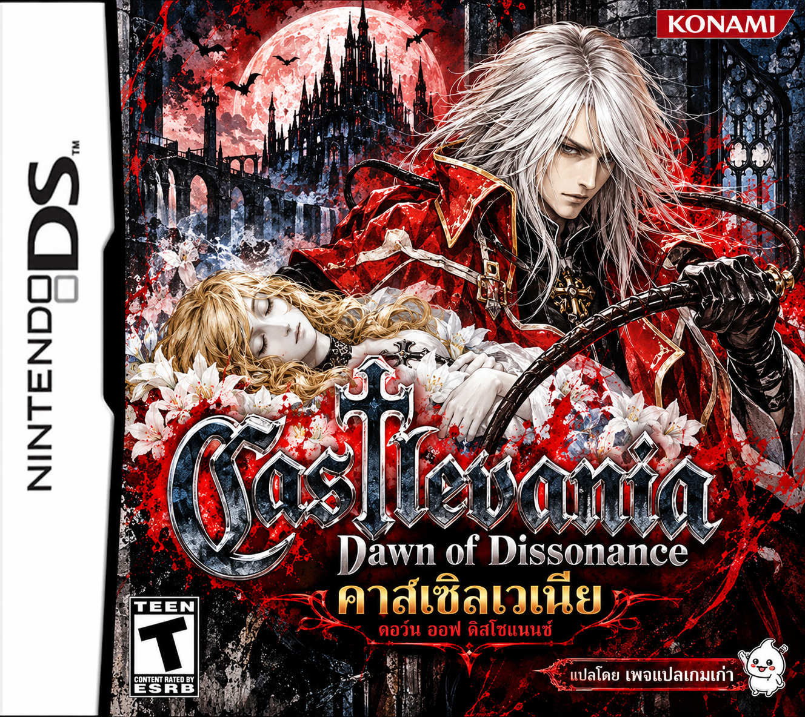
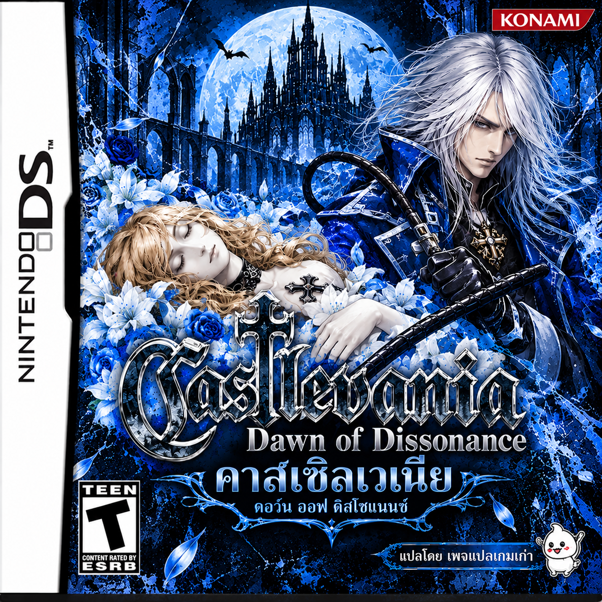

สีแดง · v1.0
Normal
เวอร์ชันปกติ — จัสต์ในเสื้อคลุมสีแดง
ใช้ Dawn of Dissonance v1.0.5 (USA)
ฉบับ Normal ภาษาอังกฤษ
เลือกไฟล์เกมเพื่อเริ่มต้น
ดาวน์โหลดเกมภาษาไทย — สีแดงภาษาไทย v1.0 ทั้งสองเวอร์ชัน เลือกสีและชื่อให้ตรงกับไฟล์เกมของคุณ แล้วลงแพตช์ได้ในหน้านี้

เวอร์ชันปกติ — จัสต์ในเสื้อคลุมสีแดง
ใช้ Dawn of Dissonance v1.0.5 (USA)
ฉบับ Normal ภาษาอังกฤษ
เลือกไฟล์เกมเพื่อเริ่มต้น
ดาวน์โหลดเกมภาษาไทย — สีแดง
เวอร์ชันสีน้ำเงิน — เสื้อคลุมและรายละเอียดเฉพาะรุ่น พร้อมคำแปลส่วนต่าง
ใช้ Dawn of Dissonance v1.0.5 (USA)
ฉบับ Belnades Blood Edition ภาษาอังกฤษ
เลือกไฟล์เกมเพื่อเริ่มต้น
ดาวน์โหลดเกมภาษาไทย — สีน้ำเงินไฟล์เกมอยู่ในอุปกรณ์ของคุณตลอดขั้นตอน ระบบไม่อัปโหลดเกมและไม่เขียนทับไฟล์ต้นฉบับ หากเลือกผิดรุ่น ระบบจะแจ้งให้เลือกใหม่
บันทึกวิธีลงแพตช์ภาษาไทยบทสนทนา คำอธิบาย ชื่อตัวละคร และชื่อมอนสเตอร์เป็นภาษาไทย เมนูและชื่อไอเทมคงภาษาอังกฤษเพื่อให้อ่านได้ชัดเจน
Normal: ผู้ใช้ทดสอบหน้าจอที่แก้แล้ว · Belnades: ตรวจไฟล์และระบบฟอนต์แล้ว ยังรอทดสอบในเกมจริง · ทั้งสองรุ่นยังไม่ได้ยืนยันการเล่นจนจบ